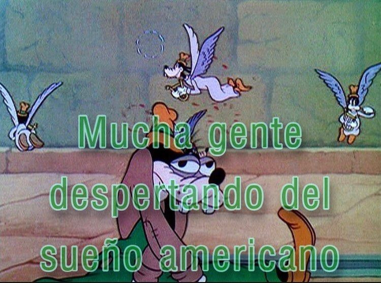

19 tkm btw
_podríamos ser tan buenos, sino fuera por las circunstancias!_
s. zizekde pasta en pasta viven los yanquis pobres
dan penita ni bien verlos
en el cobertizo, en las paredes
hay un agujero negro que los traga
les imprime en la madera una señal bifronte
primero para el anca tibia y puritana
donde mi amigo les tatuó un lovecraft entumecido
por la marea de todos los océanos conquistados
en la otra faz un jimi hendrix con cadenas
industriales la cabeza
de águila imperial se pasa de rosca y babea
senil la gota gorda protestante
en pose onda san jorge lobotomizado

cositas
imaginaron una colina y vaya
que la levantaron sí
ahora tiene ese pico la cabeza medio torcida medio
carbonizada con la forma y los ojos de jeff bezzos
vuela en un cohete flácido hacia el vacío más cruel
y nuestro reptiliano favorito el que maneja
los mil feedlots algorítmicos de la mercancía
digital?
ay digo
no se le queman en ningún
ritual de sanación los bitcoins arrugados sus pasiones
maquínicas
la sangre fría tiene como todo
sus efectos colaterales
y al pobre hombre al más hondo
explorador de la humanidad que los padres fundadores
que los primerísimos pioneros jamás imaginaron
a los treintipico años
no se le para
y sin embargo todas tenemos sus pudores
nocturnos bien impresos en las manchas
de nuestras remeras
porque no somos acaso, de mañana
y de tarde imagen
y semejanza de estos ay tan tiránicos y modernos dioses nuestros?
dioses tristes podés decir
para el olimpo del proceso del valor
en tu sensibilidad y en la suya
y en la mía también habita un fondo de inversión
un conglomerado empresarial que
aparece
blurreado
pero bien que lo amamos
le dedicamos la fatiga y el logo
capitán amérika en cada niño del condado
mientras suena el aspaviento como un tanque sobre la escarcha
y recorre nuestros barros cantando épicas bélicas

con voz de gallo al ladrido de los perros
invisibles todavía pero epa
muy bien representados
casi como en un
cuadro realista se arden
en nuestras lenguas y cuerpas
entonces una pesadilla agria da vueltas al mundo con métrica vintage
quiere declamar su perigeo shitpostero con no sé qué
poesía del yo la lírica oxidental
como un modo de anunciar las profecías primordiales
pero cruzadas de hospicios y demonios todos
en la misma peli
moribunda de terrores liberales crezcan siempre
en tu pechito sideral
un dólar a la frente de cada animal pero también
de cada ánimo intersectado por la
circulación de capital ficticio unas croquetas
puestas en abismo
no digamos
fascismo o distopía
ni el candado
se abra oxidado en la reserva federal más netflixera
porque quién o cuántas van
a liberar el código de los astros
para la bajeza aspiracional que corre
como perro koi contra la corriente
periférica de la tasa depresiva de ganancia
si la colina de la capitol hill ahora termina
donde empieza mijos
su patria expandida de yerifs angustiados
en modulación barroca o de humo o de falopa
casi ozymandias de calores bajos
erosionándose fieramente con los vientos inclementes de la historia
un sol que nació
pobrecito hay que decirlo
algo idiota
y se reduce ahora de vuelta a su aldea y a la nuestra
se corta el chorro que da lástima
parda y culposa de que el mago blanco en su
blanca demencia nos deje de soñar
el alma súbita y el estrago
de su pico diamantino que horada los cueros nuestros
ni un imaginario fluviar sin enturbiar
ni un materialidad futura sin contaminar
que nos han dejado
para la pírrica hora de los pueblos